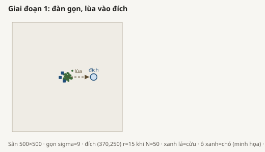
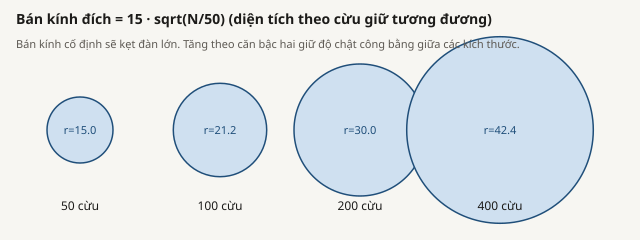
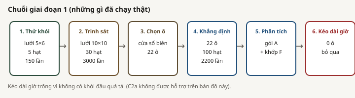
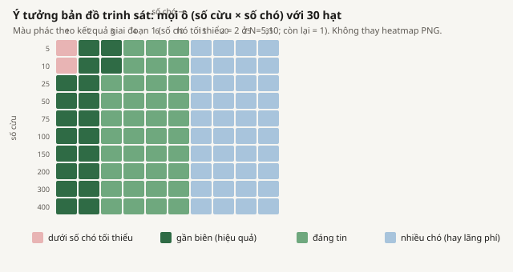
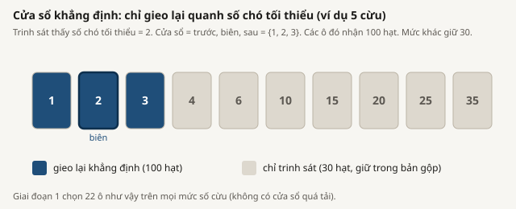
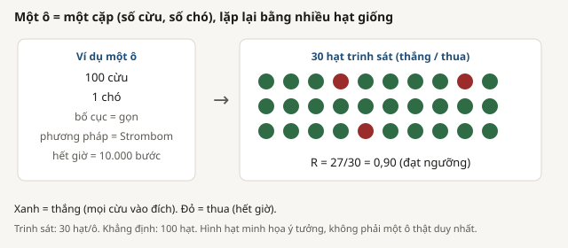
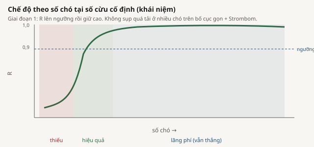
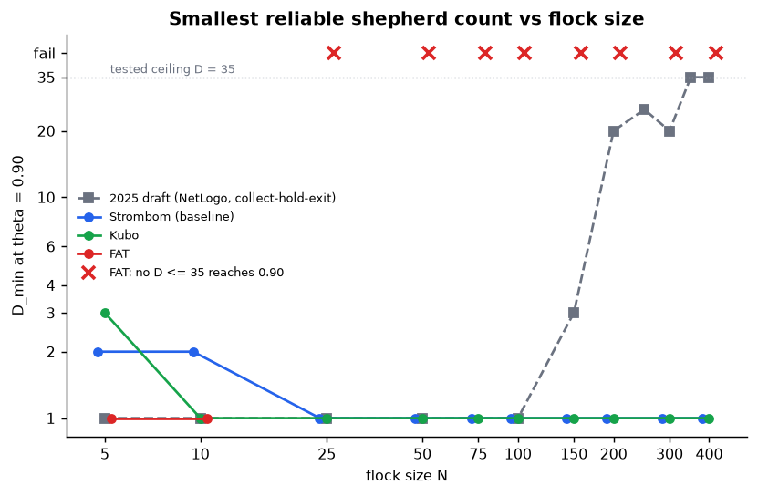

One-sentence result:
On compact starts, D_min = 2 for N in {5, 10} and D_min = 1 for N = 25 to 400.
No overcrowding. Extra dogs are mostly waste. Bootstrap intervals on baseline D_min have width zero.
Merge rows / R4,540 / 0.963
D_min N>=251
Regimes88 waste / 10 eff / 2 under
Overcrowding cells0
QUESTION What Phase 1 asks
RQ2 / Package A: how does D_min change with flock size N on compact X0 for strombom_multi?
C2a: overcrowding appears on the size map.
C2b: T1 at 20,000 ticks on overcrowding cells.
C6a: leave-one-N-out scaling fits (Package F).
DESIGN What we froze
Choice
Value
Method / layout
strombom_multi / compact
N grid
{5,10,25,50,75,100,150,200,300,400}
D grid
{1,2,3,4,6,10,15,20,25,35}
theta / T0
0.90 / 10,000
Seeds
scout 30 everywhere; claim 100 on 22 reliability-window cells
Field / goal
500 x 500; goal (370,250); radius 15 * sqrt(N/50)
DESIGN Arena and staging

Compact-start arena used for the Phase 1 size map: 500 x 500 field, flock near the center,
dogs behind the flock, goal at (370, 250) to the right. This is the fixed geometry for every (N, D) cell.

Goal radius scales as 15 * sqrt(N/50). Larger flocks get a larger capture disk so area per sheep
stays similar; otherwise growing N would make the task artificially harder.

Experiment staging: pilot smoke-checks the pipeline, scout maps the full N x D grid cheaply,
claim reseeds a frontier window, then analysis merges claim and leftover scout rows.
T1 (20,000-tick overcrowding check) is skipped here because Package A found 0 overcrowding cells.
Scout grid at 30 seeds

Scout covers every frozen (N, D) cell at 30 independent seeds. That cheap pass sketches reliability R
across the whole grid so we can see where the frontier sits before spending claim budget.
Scout rows are for planning only; they are not the citeable claim surface.
Claim window around the scout frontier

Claim reseeds only a reliability window around the scout frontier (here 22 cells at 100 seeds).
Precision is spent where D_min is decided. On those cells the merge keeps claim seeds only;
other cells keep their scout rows.
One cell is many independent seeds

Each (N, D) cell is not a single run. Reliability R is the fraction of independent seeds that succeed
(win by timeout T0). Scout uses 30 seeds; claim uses 100 on the planned window.
Regime labels along D

At fixed N, labels along the dog-count axis: under-resourced below D_min, efficient near the useful D,
and wasteful overspend when R is already high and extra dogs only add path. Phase 1 merge counts:
88 wasteful, 10 efficient, 2 under-resourced.
Package A reliability heatmap on the claim merge: each cell is R(N, D), the fraction of seeds
that succeed by timeout T0. The dark reliable band starts at D = 2 for N in {5, 10} and at D = 1
for N = 25 to 400. Source: ../claim/packages/a/reliability.csv.
D_min(N) frontier at theta = 0.90: smallest D with R >= 0.90. Values are 2 for N in {5, 10}
and 1 for N = 25 to 400. Bootstrap intervals on every baseline D_min have width zero
(every resample agreed). Source: ../claim/packages/a/frontier.csv.
N
D_min
5, 10
2
25 to 400
1
Overall R = 0.963 (4,371 wins / 4,540). Failures almost only at D = 1 on tiny flocks:
N=5 oscillation 93; N=10 stuck 58 + oscillation 18. Median ticks 183 (p90 198).
For N >= 25, median path per dog about 148.
Counts of regime labels over the N x D map: 88 wasteful (already reliable; more dogs only add path),
10 efficient (near the useful D), and 2 under-resourced (the tiny-flock cells at D = 1).
That is why extra dogs above D_min are mostly waste on compact starts.
Source: ../claim/packages/a/regimes.csv.
Cost against D on a log-log view: finish time stays roughly flat while total path grows with D.
Median finish is about 183 ticks (p90 198); for N >= 25 median path per dog is about 148.
Source: ../claim/merged_trials.csv.

D_min against flock size N for the claim-grade baseline, with the 2025 draft curve shown only
for contrast (draft numbers are not re-run here). The claim surface is nearly flat after N = 10.
Source: ../claim/packages/a/frontier.csv and draft Table A3.
RESULTS Package F
Observed D_min is only two levels {2, 1}. Leave-one-N-out RMSE: constant 0.44, linear 0.44, power 0.25, piecewise 0.13. Piecewise wins only by hard-coding the step. Not a real scaling law. C6b cannot be tested.
Leave-one-N-out RMSE by candidate scaling model (constant, linear, power, piecewise).
Piecewise looks best only because it hard-codes the step from 2 to 1; there is no real growth law
to fit, so C6b stays untestable. Source: ../claim/packages/f/scaling_cv.csv.